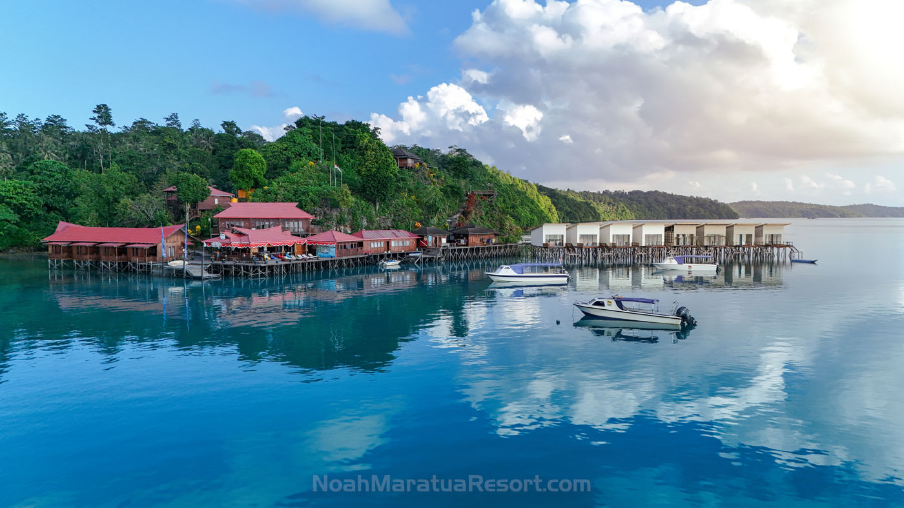
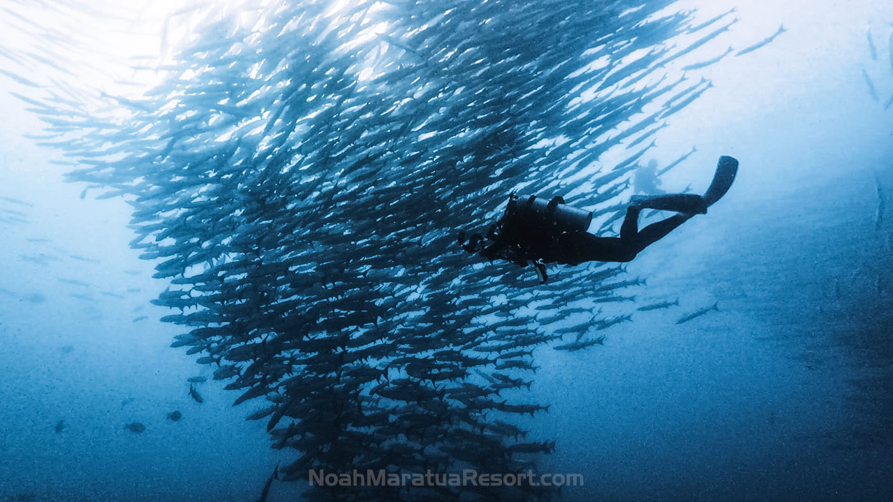
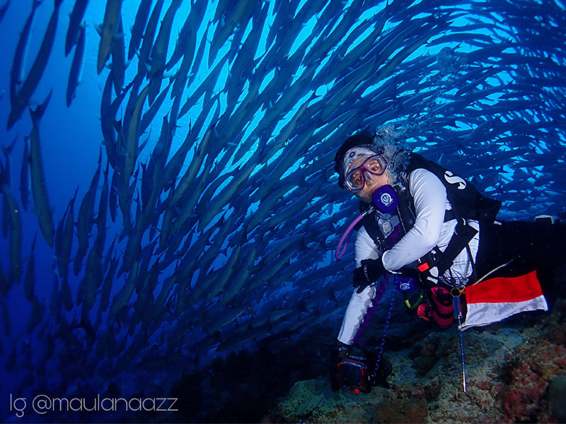
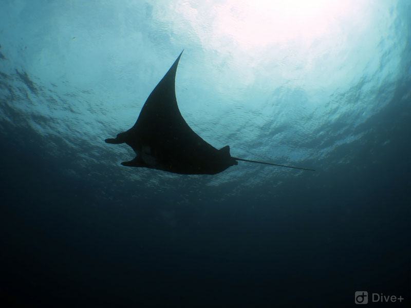
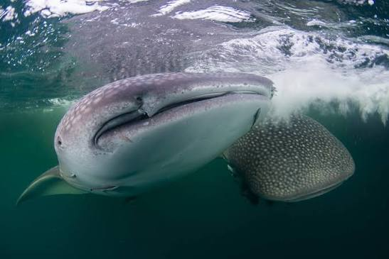
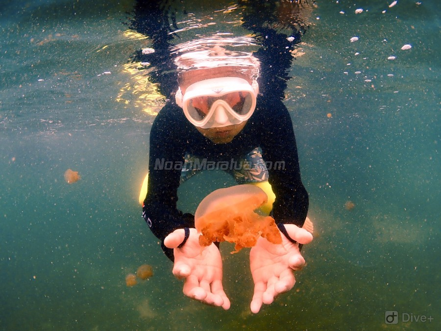
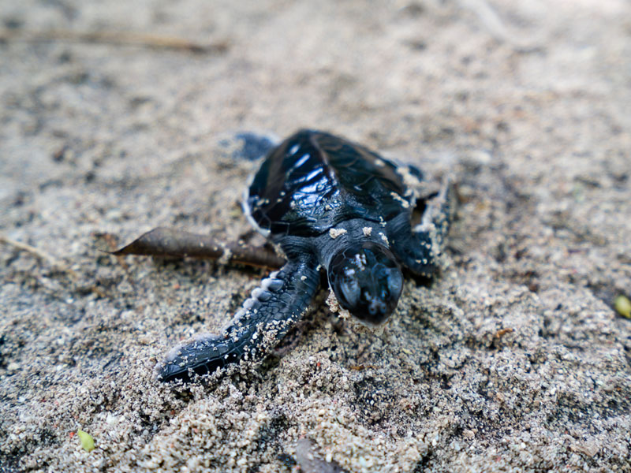
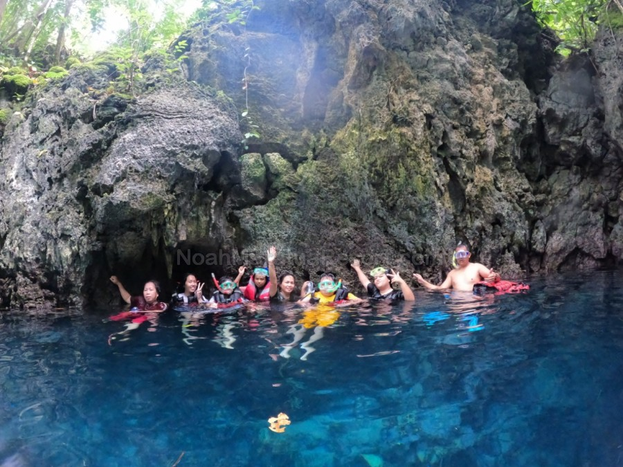
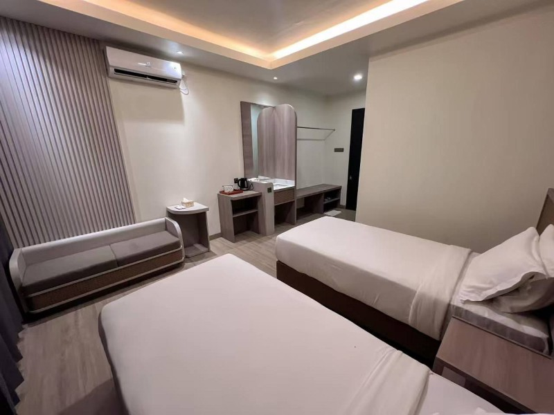

INDONESIA · DERAWAN ARCHIPELAGO12 JUL 2027 → YOUR NEXT BLUE
우리의 다음 바다는,
데라완.
거대한 어군 사이를 지나,
마라투아의 푸른 쉼에 닿는 시간.
↓
STAY ABOVE THE BLUE · NOAH MARATUA RESORT
투어 비용 / 1인$2,499 USD
출발 조건최소 5명
예정 객실 · 인원에 따라 변경Barracuda Villa
여행 기간2027.07.12 출발
01 / MEET THE OCEAN상상했던 바다가
눈앞의 장면이 될 때.
시야를 채우는 어군과 푸른 바다의 생명들.
데라완 군도의 서로 다른 표정을 만나봅니다.

한 번의 입수, 오래 남을 한 장면.01 — MARATUA · KAKABAN바라쿠다의 군무
거대한 무리가 만들어내는 입체적인 풍경. 마라투아와 카카반의 어군을 만나는 순간, 바다의 규모를 새롭게 느낍니다.

02 — SANGALAKI만타와 거북의 섬
만타와의 만남을 기대하는 푸른 바다, 그리고 거북이 보호구역. 수면 위와 아래에서 이어지는 생명의 이야기를 만나보세요.

03 — OCEAN ENCOUNTERS고래상어를 찾아
고래상어 서칭까지 포함된 여정. 자연의 리듬을 기다리는 시간도, 이 여행이 주는 특별한 경험입니다.

해양생물 관찰과 포인트 운영은 해황·시즌·현지 사정에 따라 달라지며, 만남을 보장하지 않습니다.
02 / DIVE WITH CARE충분히 즐기고,
오래 기억하도록.
가이드와 함께 바다를 읽고,
각자의 호흡으로 경험을 쌓는 여행.
입수 전 브리핑부터 다이빙 후의 휴식까지. 서로의 컨디션을 살피며, 해양생물을 만지거나 쫓지 않고 거리를 지켜 관찰합니다.
가이드 동행제티 다이빙바다를 존중하는 관찰
KAKABAN해파리 호수
호수 스노클링과 입장료 포함

SANGALAKI거북이 보호구역
보호구역 입장료 포함

MARATUA섬과 케이브
섬 투어 및 케이브 방문 포함

03 / REST BY THE SEA
다이빙의 끝에,
편안한 쉼표.

BARRACUDA VILLAYOUR ISLAND HOMENoah Maratua
Resort
Barracuda Villa
하루의 다이빙을 마치고 돌아올 공간. 바다에서의 긴 여운을 나누고, 다음 입수를 위한 휴식을 채웁니다.
Barracuda Villa 이용을 계획하고 있으며, 확정 인원에 따라 객실 타입이 변경될 수 있습니다.
공식 객실 살펴보기 ↗ 04 / THE JOURNEY · JULY 2027바다로 향하는 9일.
2027년 7월 12일 출발 — 7월 20일 인천 도착 · 총 15회 다이빙
인천 (ICN)→자카르타 (CGK)→베라우 (BEJ)→자카르타 (CGK)→인천 (ICN)
07.12 · 출발인천 → 자카르타
선택한 국제선으로 출발합니다.
국제선 이동
07.13 · 입수베라우 도착
바틱항공 · ID
04:45 CGK → 08:15 BEJ
리조트 이동 후 첫 입수
체크다이빙 1회
07.14–17 · 다이빙데라완의 바다
나흘간 매일 3회.
군도의 다양한 수중 풍경을 만납니다.
총 12회 다이빙
07.18 · 마지막 입수두 번의 푸른 기억
마지막 다이빙 후
비행 전 충분한 휴식
다이빙 2회
07.19 · 귀환베라우 → 자카르타
바틱항공 · ID
08:55 BEJ → 10:20 CGK
휴식 후 국제선 연결
자카르타 1박 포함
07.20 · 도착인천 도착
선택한 국제선으로 귀국합니다.
여정 마무리
국제선 시간 확인 ＋
아시아나항공 OZ
가는 편 · 7월 12일14:55 ICN → 20:10 CGK
오는 편 · 7월 19일 → 20일21:30 CGK → 06:50 ICN
가루다인도네시아 GA
가는 편 · 7월 12일10:35 ICN → 15:40 CGK
오는 편 · 7월 19일 → 20일23:15 CGK → 05:30 ICN
대한항공 KE
가는 편 · 7월 12일 → 13일19:40 ICN → 00:30 CGK
오는 편 · 7월 19일 → 20일23:15 CGK → 08:30 ICN
대안편 · 출발일 별도 확인02:00 CGK → 11:20 ICN
모든 시각은 현지 시각이며 발권 전 운항표를 최종 확인합니다. 대한항공 02:00 대안편은 출발 날짜와 숙박 일정을 함께 확인해주세요.
DOMESTIC FLIGHTS
국내선 · 바틱항공 ID
국제선 선택과 관계없이 공통
가는 편 · 2027년 7월 13일
오는 편 · 2027년 7월 19일
모든 출발·도착 시간은 각 공항의 현지 시각입니다. 항공편 번호와 운항 시간은 발권 전 최종 확인합니다.
ICN 인천국제공항CGK 자카르타 수카르노하타국제공항BEJ 베라우 칼리마라우공항
자카르타 숙박은 7월 13일·19일 각 1박 포함입니다. 국제선 도착 및 국내선 출발에 맞춘 객실 이용 시간은 별도로 안내합니다.
19일 08:55 항공편 탑승에 필요한 비행 전 휴식 시간을 확보하도록 18일 마지막 다이빙 종료 시각과 리조트 출발 시간을 조정합니다. 포인트와 섬 투어 운영일은 해황 및 현지 사정에 따라 달라질 수 있습니다.
05 / WHAT'S INCLUDED
여행에 담은 것,
미리 알아둘 것.
＋ 포함 사항
- 가이드 포함 총 15회 다이빙13일 1회 + 14~17일 매일 3회 + 18일 2회
- 자카르타 숙박 7월 13일·19일 각 1박
- 제티 무제한 다이빙현지 운영·안전 기준에 따라 진행
- KAKABAN 해파리 호수 스노클링·입장료
- SANGALAKI 거북이 보호구역 입장료
- MARATUA 섬 투어·케이브 방문
- 고래상어 서칭
- 와이파이, 차·커피·생수·스낵
− 불포함 사항
- 국제선·국내선 항공권
- 소프트드링크·주류·추가 메뉴
- 추가 다이빙 1회 $50
- 나이트 다이빙 1회 $60
- 나이트록스 1일 $25
- 여행자보험·다이빙보험
- 서비스차지 1박당 $10
숙박 박수·식사·공항 및 보트 이동의 포함 범위, 서비스차지 부과 단위는 최종 견적에서 확인합니다.
06 / YOUR NEXT BLUE다음 로그북은,
데라완에서.
최소 5명 이상 모집 시 출발 가능합니다.
예약과 동시에 참가비의 30%를 입금해주세요.
1인 투어 비용$2,499 USD
예약 시 30%$749.70 약 $750
원화 결제 시 입금 당시 ‘살 때’ 환율을 적용합니다. 적용 은행과 환율 종류는 입금 전 안내받으세요.
은행·계좌번호·예금주를 함께 복사합니다.
예약 전 최종 일정·포함 범위·취소 및 환불 규정을 확인해주세요.